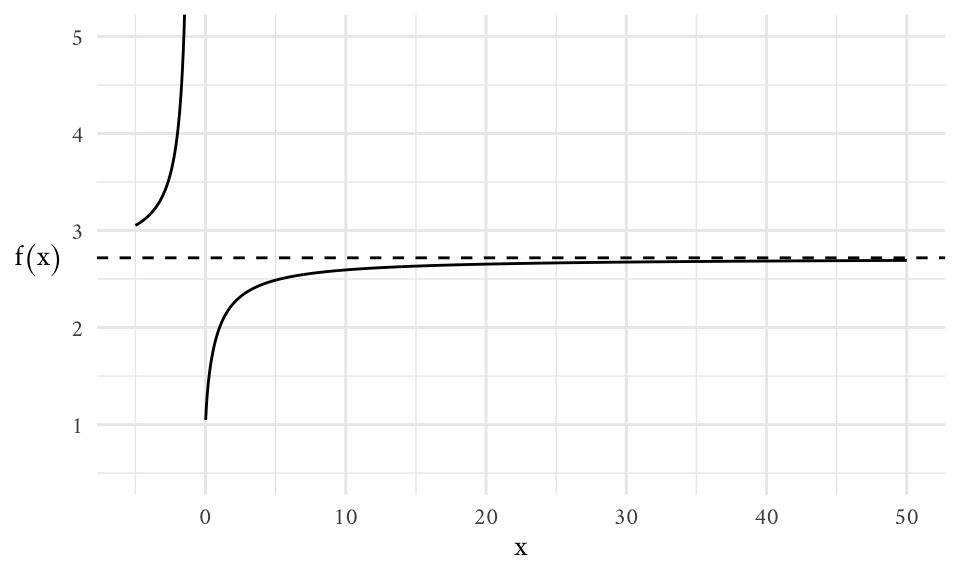
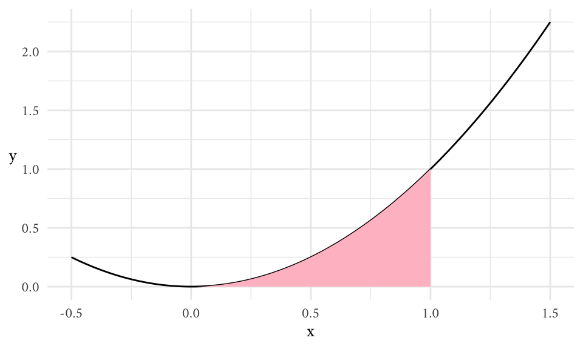

Packages
library(ggplot2)
theme_set(
theme_minimal(base_family = "Amiri") +
theme(axis.title.y = element_text(angle = 0, vjust = 1/2))
)library(ggplot2)
theme_set(
theme_minimal(base_family = "Amiri") +
theme(axis.title.y = element_text(angle = 0, vjust = 1/2))
)Euler’s number \(e\) is defined in terms of a limit approaching infinity.
\[ e = \lim_{x \to \infty} \bigg( 1 + \frac{1}{x} \bigg)^x \approx 2.718282... \]
We also call this a horizontal asymptote.
foo <- function(x) (1 + 1/x)^x
ggplot() +
xlim(-5, 50) +
coord_cartesian(ylim = c(0.5, 5)) +
labs(x = "x", y = "f(x)") +
geom_function(fun = foo, n = 1e3) +
geom_hline(yintercept = exp(1), linetype = "dashed")
Note that the limit is undefined as \(x \to 0\).
Limit Definition
\[ \begin{align} f'(x) = \lim_{h \to 0} \frac{f(x + h) - f(x)}{h}, &&\text{provided the limit exists} \end{align} \tag{1.1}\]
Derivatives are used to understand instantaneous rates of change, i.e., when \(\Delta x \approx 0\).
This formula is equivalent:
\[ f^\prime (a) = \lim_{b \to a} \frac{f(b) - f(a)}{b-a} \]
For example, the area of a growing square is \(A(x) = x^2\). How does \(A(x)\) change every time \(x\) changes? We have that, for any given value of \(x\), the rate of instantaneous change is given by:
\[ \begin{align} A^\prime (x) = 2x && \text{or} && \frac{dA}{dx} = 2x \end{align} \]
Note. When \(\Delta\) is infinitely small we change notation to \(d\).
If we zoom in on any function at a given point \(a\), a tangent line at \(a\) will be given by the following formula:
\[ y = f(a) + f^\prime (a) (x-a) \]
Critical points
\(c\) is a critical point for the smooth function \(f\) iff \(f^\prime(c) = 0\).
In order to figure out if \(c\) is a local maximum or local minimum, we use the second derivative. The second derivative of \(f\) measures the rate of change of the first derivative. In a nutshell, we find critical points by solving \(f^\prime = 0\). We then plug these values into \(f^{\prime\prime}\). If the result is positive, the critical point is a local minimum; if the result is negative, the critical point is a local maximum.
This procedure does not always work.
Note. For higher order derivatives we use the \(f^{(n)}(x)\) notation, where \(f^{(0)}(x) = f(x)\). We can also use the symbol \(\frac{d^nf}{dx^n}\) for this purpose.
Derivative Rules:
The constant rule—i.e., constants can move into and out of derivatives.
\[ \frac{d}{dt} \bigg[c f(t) \bigg] = c \frac{d}{dt} \bigg[f(t)\bigg] = c \cdot f^\prime (t) \tag{1.2}\]
The sum rule—i.e., the derivative of the sum is the sum of the derivatives.
\[ \frac{d}{dt}\bigg[ f(t) + g(t) \bigg] = f^\prime (t) + g^\prime (t) \tag{1.3}\]
The product rule.
\[ \frac{d}{dx} \bigg[f(x) g(x) \bigg] = f(x) g^\prime (x) + g(x) f^\prime(x) \tag{1.4}\]
The power rule.
\[ \frac{d}{dx} \bigg[ x^n\bigg] = n \cdot x^{n-1} \tag{1.5}\]
Note. All these rules make it possible to estimate the derivative of any polynomial of the form \(c_nx^n + c_{n-1} x^{n-1} + \dots + c_1\).
The chain rule allows us to find derivatives of compositions.
\[ \frac{d}{dx} \bigg[ (f \circ g)(x) \bigg] = f^\prime (g(x)) \cdot g^\prime (x) \tag{1.6}\]
We can use Equation 1.5 and Equation 1.6 to figure out the following:
\[ \frac{d}{dx} \bigg[ \frac{1}{g(x)} \bigg] = - \frac{g^\prime (x)}{g(x)^2} \]
Using this with Equation 1.4, we can figure out the quotient rule:
\[ \frac{d}{dx} \bigg[ \frac{f(x)}{g(x)}\bigg] = f^\prime (x) \Bigg( \frac{1}{g(x)} \Bigg) + f(x) \Bigg(- \frac{g^\prime (x)}{g(x)^2} \Bigg) = \frac{f^\prime (x) g(x) - f(x) g^\prime (x)}{g(x)^2} \tag{1.7}\]
What is the area \(A(a, b)\) below the graph \(y = f(x) \geq 0\), above the \(x\)-axis, and between \(x=a\), and \(x=b\)? We can estimate \(A(a, b)\) with a sum, and then argue that the estimate becomes exact as the number of terms approximates \(\infty\). This is called a Riemann sum.
\[ A(a, b) = \underbrace{\int_a^b \overbrace{f(x)}^{\small \text{integrand}} dx}_\text{integral} \]
The elongated "s" stands for "sum," when the number of terms to be summed approaches infinity. The decorations on the "s" are called the lower and upper limits of integration.
The symbols \(f(x) \cdot dx\) make it clear that the terms of a Riemann sum are the areas of rectangles:
\[ \begin{align} \text{base: } (x_{n+1} - x_n), &&\text{height: }f \bigg( \frac{x_n + x_{n+1}}{2} \bigg) \end{align} \]
For example,
\[ \int_0^1 x^2 dx = \frac{x^3}{3} \Bigg|_0^1 = \frac{1^3}{3} - \frac{0^3}{3} = \frac{1}{3} \]
represents the area shaded in pink in the following graph:
ggplot() +
xlim(-0.5, 1.5) +
geom_function(fun = \(x) x^2) +
stat_function(geom = "area", fun = \(x) x^2, xlim = c(0, 1), fill = "pink") +
labs(x = "x")
integrate(\(x) x^2, lower = 0, upper = 1)0.3333333 with absolute error < 3.7e-15n <- 100
x <- seq(0, 1, length.out = n)
result <- 0
for (i in 1:(n - 1)) {
result <- result + (x[i + 1] - x[i]) * ((x[i] + x[i + 1])/2)^2
}
result[1] 0.3333248We use the area under the curve in this graph to think about many things—e.g., displacement of an object with \(x\) as time and \(y\) as velocity; probability distributions of arbitrary random variables with \(y\) as probability densities; etc.
The Fundamental Theorem of Calculus
\[ f(b) - f(a) = \int_a^b f^\prime (x) dx \tag{1.8}\]
We have already seen an example of this when looking for shaded area under \(f(x) = x^2\) between \(0\) and \(1\) in the previous example:
\[ \int_0^1 x^2 dx = \int_0^1 \frac{d}{dx} \bigg[ \frac{1}{3} x^3\bigg] dx = \bigg(\frac{1}{3}x^3\bigg) \Bigg|_0^1 = \frac{1}{3} (1^3) - \frac{1}{3} (0^3) = \frac{1}{3} \]
Antiderivatives